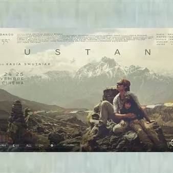

sab 14 nov · dalle 18:00
“Mustang”
Proiezione del film-documentario “Mustang”, presentato da Kasia Smutniak. Un racconto intimo e inedito che nasce dal primo viaggio compiuto nel 2003 di Kasia Smutniak e Pietro Taricone nella remota regione del Mustang e racconta oltre vent'anni di vita. Nel 2003 Kasia e Pietro…
 Indicazioni
Indicazioni
- Costi e prenotazioni
- Costo non indicato · Prenotazione non indicata
- Programma
- Programma da verificare. Apri la fonte ufficiale per orari e possibili aggiornamenti.
- In caso di maltempo
- Nessuna indicazione specifica pubblicata.
- Note
- Acquisito automaticamente dalla fonte.
L’EVENTO
Descrizione completa
Proiezione del film-documentario “Mustang”, presentato da Kasia Smutniak.
Un racconto intimo e inedito che nasce dal primo viaggio compiuto nel 2003 di Kasia Smutniak e Pietro Taricone nella remota regione del Mustang e racconta oltre vent'anni di vita.
Nel 2003 Kasia e Pietro si conoscono da poco quando, zaino in spalla e una piccola telecamera, partono per il Mustang. Quel luogo sospeso nel tempo, dove non esiste neppure la strada, diventa parte di loro e lì si scambiano una promessa: tornare un giorno e fare qualcosa per proteggere quella cultura. Ma il corso degli eventi cambia improvvisamente e insieme non ci torneranno più.
Molti anni dopo la loro figlia Sophie riscopre le immagini di quel primo viaggio e di quelli che sua madre ha fatto poi con lei da bambina. È in questo percorso che nasce l'incontro con una donna speciale, Kunzom e con lei si realizza la promessa fatta un tempo: costruire una scuola che consenta ai bambini di quella regione di proseguire gli studi senza dover abbandonare le loro famiglie. Attraverso la voce di Sophie, il racconto ripercorre oltre vent'anni di vita, tra memoria personale e storia collettiva, in un viaggio che attraversa il tempo e le generazioni, cercando ciò che resta quando tutto si trasforma in quel flusso incessante che in Mustang chiamano Samsara.
Scritto da Kasia Smutniak. Nata a Varsavia nel 1979, figlia di un generale dell’aeronautica militare polacca, cresce a contatto con il mondo dell’aviazione, eredita dal padre la passione per il volo e consegue il brevetto da pilota a soli 16 anni.
Dai primi anni 2000 intraprende la carriera di attrice, recitando in oltre 50 progetti tra cinema e serie TV.
Nel 2011 fonda la Pietro Taricone Onlus e costruisce la Solar Ghami School nel Mustang, in Nepal, una scuola innovativa costruita nel pieno rispetto dell’architettura Mustanghi che mira a preservare la millenaria cultura tibetana.
Ha esordito alla regia con il documentario “Mur” nel 2023 vincendo il Nastro d’Argento come miglior documentario. Presentato nella selezione ufficiale del Toronto Film Festival e in anteprima italiana alla Festa del Cinema di Roma, “Mur” è stato selezionato nella cinquina “miglior documentario” ai David di Donatello 2024. “Mustang” è la sua seconda opera.
Per maggiori informazioni: https://www.kinemax.it/
IL PROGRAMMA
Programma e orari
Appuntamenti raccolti dalle fonti elencate. Dove manca un orario, non è ancora disponibile in questa scheda.
Programma pubblicato
- Dal 2026-11-14 al 2026-11-14
INFORMAZIONI UTILI
Prima di partire
- Controllare la fonte prima di partire.
ORGANIZZAZIONE